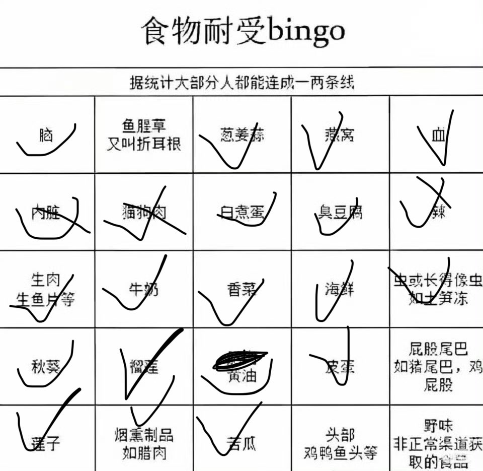

raincandy_U
@AmeAsukaLangley
@LazyCataww 那确实是，但我是感觉猫狗肉尊重但不理解，毕竟老家那边挺多狗肉馆的

天雨雋子
@LazyCataww
内脏只要不是生殖器官泌尿系统我都能接受（什么鞭，腰子，动物的睾丸，子宫之类的）
猫狗能接受因为我是中国人🤓
虽然我没吃过 https://t.co/iJGughNZBn https://t.co/iLhHySFpVW